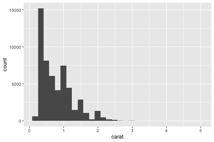
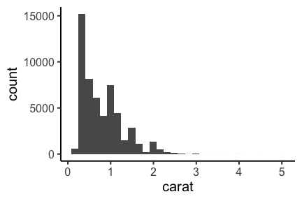
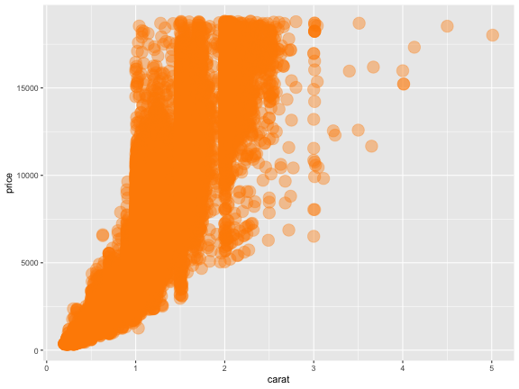
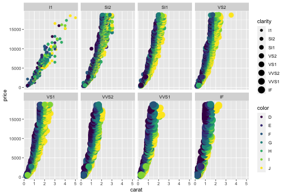
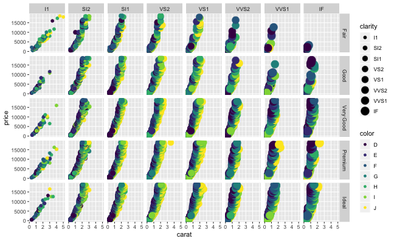
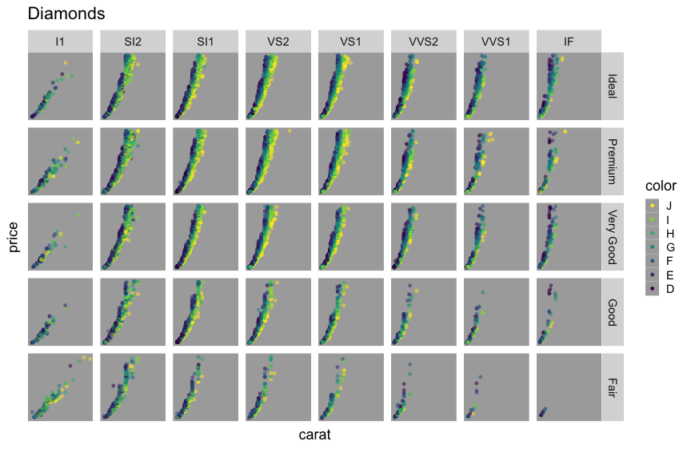
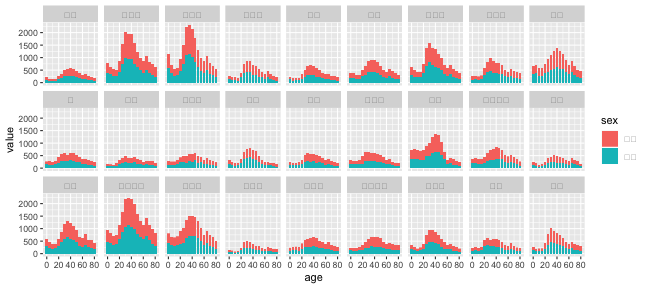

Rによるデータ前処理実習
東北大学 生命科学研究科 進化ゲノミクス分野 特任助教
(Graduate School of Life Sciences, Tohoku University)
(Graduate School of Life Sciences, Tohoku University)
2019-12-28 東京医科歯科大学 M&Dタワー 情報検索室1
最終回: 実践してみよう
- データの取得、読み込み
- 探索的データ解析
- 前処理、加工 → 整然データ
- 可視化、仮説生成 (ここ目標にしたいので軽く作図の解説)
- 統計解析、仮説検証
- 報告、発表

ggplotの基本: 指示を + していく
ggplot()このデータでよろしくgeom_*()点や線をよろしくtheme_*()軸とか背景の見た目をよろしく
ggplot(data = diamonds) # diamondsデータでキャンバス準備
# geom_histogram(aes(x = carat)) + # x軸caratのヒストグラムで
# theme_classic(base_size = 20) # クラシックなテーマで
ggplotの基本: 指示を + していく
ggplot()このデータでよろしくgeom_*()点や線をよろしくtheme_*()軸とか背景の見た目をよろしく
ggplot(data = diamonds) + # diamondsデータでキャンバス準備
geom_histogram(aes(x = carat)) # x軸caratのヒストグラムで
# theme_classic(base_size = 20) # クラシックなテーマで

ggplotの基本: 指示を + していく
ggplot()このデータでよろしくgeom_*()点や線をよろしくtheme_*()軸とか背景の見た目をよろしく
ggplot(data = diamonds) + # diamondsデータでキャンバス準備
geom_histogram(aes(x = carat)) + # x軸caratのヒストグラムで
theme_classic(base_size = 20) # クラシックなテーマで

Aesthetic mapping でデータと見せ方を紐付け
aes() の中で列名を指定する。
ggplot(diamonds, aes(x = carat, y = price)) +
geom_point(mapping = aes(color = color, size = clarity))

データによらず一律で見せ方を変える
aes() の外で値を指定する。
ggplot(diamonds, aes(x = carat, y = price)) +
geom_point(color = "darkorange", size = 6, alpha = 0.4)

値に応じて切り分けて表示 (1変数facet)
ggplotの真骨頂！ これをR標準グラフィックスでやるのは結構たいへん。
ggplot(diamonds, aes(x = carat, y = price)) +
geom_point(mapping = aes(color = color, size = clarity)) +
facet_wrap(~ clarity, ncol = 4L)

値に応じて切り分けて表示 (≥2変数facet)
ggplotの真骨頂！ これをR標準グラフィックスでやるのは結構たいへん。
ggplot(diamonds, aes(x = carat, y = price)) +
geom_point(mapping = aes(color = color, size = clarity)) +
facet_grid(cut ~ clarity)

多変量データを俯瞰する

好きなデータをいじくり倒してみよう
- 自分がこれから解析したいデータ (もし手元にあれば)
- Rやパッケージに付属のデータ (のうちtidyじゃないもの)
VADeath,anscombe,economics
- 何か適当なパブリックデータ
- data.go.jp: データカタログサイト
- IT DASHBOARD: 内閣官房
- e-Stat: 政府統計の総合窓口
- DATA.GOV: U.S. Government’s open data
- 気象庁
- 目黒区オープンデータ: 「地域・年齢別人口」とかいい感じにmessy。
実演: 目黒区オープンデータ
「地域・年齢別人口」CSVをダウンロードして、読み込む
infile = "131105_population_20170401.csv"
raw_df = readr::read_csv(infile)
names(raw_df)
[1] "都道府県コード又は市区町村コード" "地域コード" "都道府県名"
[4] "市区町村名" "調査年月日" "地域名"
[7] "総人口" "男性" "女性"
[10] "0-4歳の男性" "0-4歳の女性" "5-9歳の男性"
[13] "5-9歳の女性" "10-14歳の男性" "10-14歳の女性"
[16] "15-19歳の男性" "15-19歳の女性" "20-24歳の男性"
[19] "20-24歳の女性" "25-29歳の男性" "25-29歳の女性"
[22] "30-34歳の男性" "30-34歳の女性" "35-39歳の男性"
[25] "35-39歳の女性" "40-44歳の男性" "40-44歳の女性"
[28] "45-49歳の男性" "45-49歳の女性" "50-54歳の男性"
[31] "50-54歳の女性" "55-59歳の男性" "55-59歳の女性"
[34] "60-64歳の男性" "60-64歳の女性" "65-69歳の男性"
[37] "65-69歳の女性" "70-74歳の男性" "70-74歳の女性"
[40] "75-79歳の男性" "75-79歳の女性" "80-84歳の男性"
[43] "80-84歳の女性" "85歳の男性以上" "85歳の女性以上"
[46] "不詳者の男性" "不詳者の女性" "世帯数"
[49] "備考"
実演: 目黒区オープンデータ
ggplotしたくなる形に変形
tidy_df = raw_df %>%
select("地域名", matches("の.+性$")) %>%
rename(place = 地域名) %>%
pivot_longer(-place, names_to = "category") %>%
separate(category, c("age", "sex"), sep = "の") %>%
filter(str_detect(age, "\\d")) %>%
mutate(age = parse_number(age)) %>%
mutate(place = str_replace(place, "\\S丁目", "")) %>%
print()
place age sex value
<chr> <dbl> <chr> <dbl>
1 駒場 0 男性 65
2 駒場 0 女性 63
3 駒場 5 男性 85
--
2990 東が丘 75 女性 39
2991 東が丘 80 男性 22
2992 東が丘 80 女性 41
実演: 目黒区オープンデータ
作図してみる
tidy_df %>%
ggplot(aes(age, value)) +
geom_col(aes(fill = sex)) +
facet_wrap(~ place, nrow = 3L)

Reference
- R for Data Science — Hadley Wickham & Garrett Grolemund
- Website, Book
- 日本語版書籍(Rではじめるデータサイエンス)
RユーザのためのRStudio[実践]入門 — 松村優哉ほか
前処理大全 — 本橋智光
- 過去の講義資料
- 「Rにやらせて楽しよう — データの可視化と下ごしらえ」 岩嵜航 2018
- 「Rを用いたデータ解析の基礎と応用」石川由希 2019 名古屋大学
- 「Hands-on R Lecture for Makino Lab」 岩嵜航 2019 東北大学